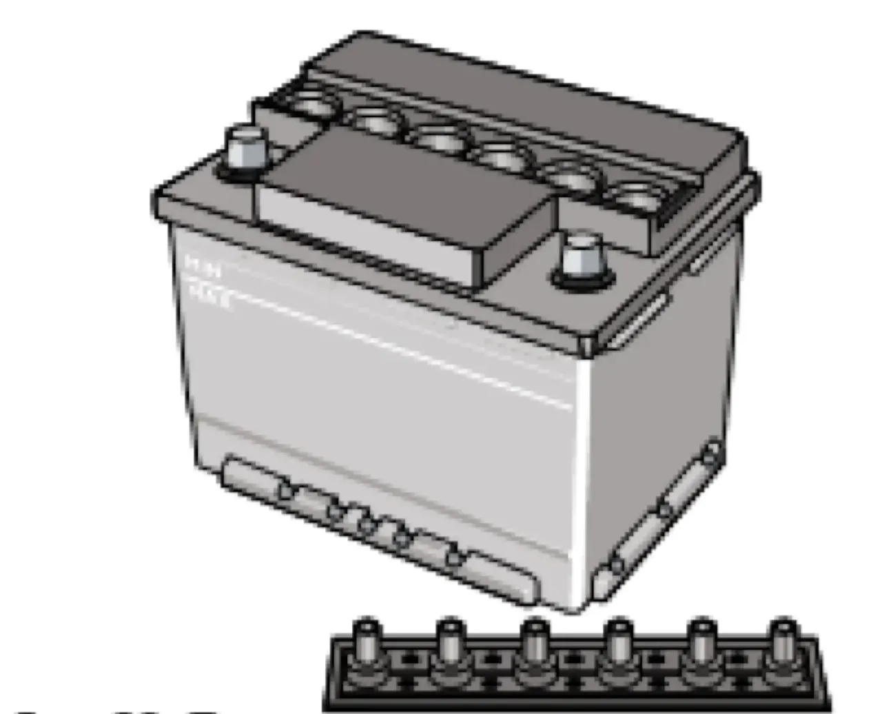

ТЕХНИЧЕСКОЕ ОБСЛУЖИВАНИЕ И ТЕКУЩИЙ РЕМОНТ АВТОМОБИЛЯ
Аккумуляторная батарея
аккумуляторАКБэлектролитклеммы
Уровень электролита должен быть между метками «MIN» и «MAX», нанесёнными на полупрозрачном корпусе батареи, а при их отсутствии — по нижнюю кромку заливного отверстия. Если уровень электролита в батарее ниже нормы — обратитесь к дилеру ЗАО «Джи Эм-АВТОВАЗ».

Предупреждение / внимание:
Постоянно следите за чистотой клемм и зажимов аккумуляторной батареи и за надёжностью их соединения. Помните, что окисление клемм и зажимов, а также небрежное соединение вызывают искрение в месте ненадёжного контакта, что может привести к выходу из строя электронного оборудования автомобиля.
Постоянно следите за чистотой клемм и зажимов аккумуляторной батареи и за надёжностью их соединения. Помните, что окисление клемм и зажимов, а также небрежное соединение вызывают искрение в месте ненадёжного контакта, что может привести к выходу из строя электронного оборудования автомобиля.
Предупреждение / внимание:
Не допускается проверять работоспособность генератора при работающем двигателе путём снятия зажимов с аккумуляторной батареи.
Не допускается проверять работоспособность генератора при работающем двигателе путём снятия зажимов с аккумуляторной батареи.
При установке аккумуляторной батареи на автомобиль следите за тем, чтобы провода были соединены в соответствии с указанной на их наконечниках и клеммах батареи полярностью (положительная клемма больше отрицательной). При заряде аккумуляторной батареи непосредственно на автомобиле от постороннего источника тока обязательно отключите её от генератора. Аккумуляторная батарея соединяется с клеммой «В+» генератора положительным проводом — наконечник «+».